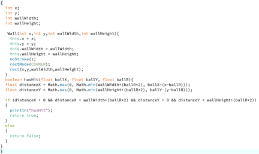
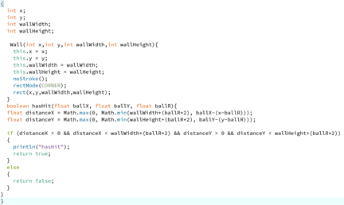

Muhsin Rahman
Hello my name is Muhsin, I am a British Bangladeshi student who has been born and bred in East London. One interesting fact about me(which everyone is shocked about when I tell them) is, I have 11 brothers and 3 sisters and "YES" we all have the same biological parents. In my free time I like playing and watching sports especially Football, I also like reading books and watching anime. As for why I chose Computer Science I really do not know myself, I have no experiencing in coding what so ever. All I can say is I really like reading books about Computer Science and also Technology is the way foward. I hope to be an expert Computer Scientist at the end of my City journey with exceptional memories with life long friends. Now forget about my SMALL family and I hope you enjoy my project. P.S. The picture is of me when I was younger. I do not have enough courage to show myself in my current state.
Bootcamp 2020: Maze Game
My first programming project, concluding the 2 week Programming Bootcamp at City (2020). This Processing project demonstrates a comprehensive understanding of the use of arrays, loops, and randomness. I created a Maze game which detected if you had hit the walls and would end the game. For the ball to move I used a built in class which we all have used, called keyPressed(), I also added in a retry button using keyPressed(). The code used to program the detection of the ball and wall collision was very complex and used many topics from our coding Bootcamp (also alot of help from Charles). My project is still a working progress, I hope I get the chance to come back to it and have a finishing product.
Check out the code on Github: https://github.com/muhsin02/adbs980
 
